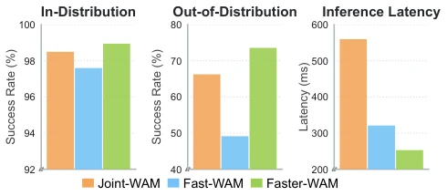
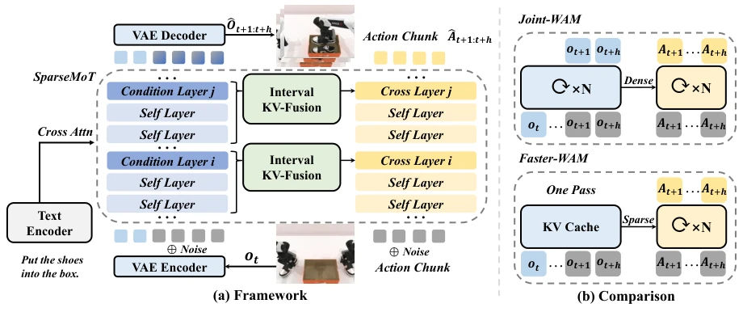
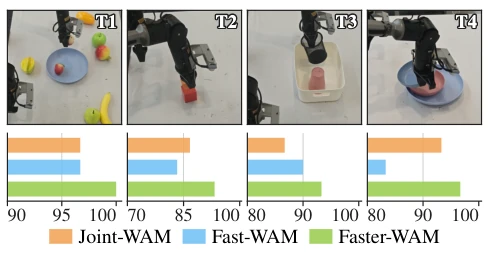
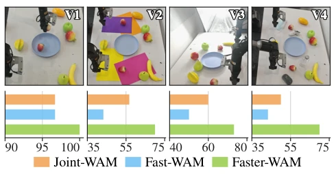

This paper taught a lesson to the WAM community: do not assume that throwing "future" into the training set guarantees everything; without it during inference, you cannot even withstand OOD. The authors keenly point out that existing Fast-WAM discards future representations entirely for speed, resulting in direct "naked run" failure in out-of-distribution scenarios, while Joint-WAM is stable but runs like an old ox pulling a broken cart. Faster-WAM attempts to walk the tightrope, seeking both future perception during inference and speed, and indeed achieved it, pulling success rates from 49% to 73% on LIBERO-Plus, and running more than twice as fast as Joint-WAM. However, although this "generate once, reuse multiple times" caching strategy is clever, will it appear a bit like "carving marks on a boat to seek the sword" in extremely dynamic scenarios due to lack of real-time feedback? After all, it no longer recalculates videos in real-time based on actions. Overall, this is an extremely delicate balancing act between "robustness" and "efficiency"; although it does not completely solve all inference latency issues, it at least proves that "future" cannot be missing during inference.
研究动机Motivation
世界动作模型（WAMs）的核心痛点在于推理时的“未来表征”取舍。现有工作面临两难：Joint-WAMs（如Li et al. 2026b; Bi et al. 2025）通过联合去噪保留未来信息，推理鲁棒性强但计算开销巨大，无法实时部署；而Fast-WAM（Yuan et al. 2026）为了效率，在推理阶段完全移除未来建模，仅在训练时使用，导致在分布外（OOD）场景下性能断崖式下跌。作者通过实验发现，移除推理时的未来条件（future conditioning）会严重损害策略的泛化能力，如图1所示，Fast-WAM在OOD设置下成功率显著低于Joint-WAM。这表明未来表征不仅是训练信号，更是推理时处理未见环境的关键。因此，亟需一种既能保留推理时未来信息，又能避免昂贵视频-动作交互的高效框架，以解决WAM在真实复杂环境中的落地瓶颈。
The core pain point of World Action Models (WAMs) lies in the trade-off of "future representations" during inference. Existing work faces a dilemma: Joint-WAMs (e.g., Li et al. 2026b; Bi et al. 2025) retain future information through joint denoising, offering strong inference robustness but with huge computational overhead, making real-time deployment impossible; while Fast-WAM (Yuan et al. 2026) removes future modeling entirely during the inference stage for efficiency, using it only during training, leading to a cliff-like drop in performance in out-of-distribution (OOD) scenarios. The authors found through experiments that removing future conditioning during inference severely damages the policy's generalization ability; as shown in Figure 1, Fast-WAM's success rate is significantly lower than Joint-WAM under OOD settings. This indicates that future representations are not only training signals but also key to handling unseen environments during inference. Therefore, there is an urgent need for an efficient framework that can retain future information during inference while avoiding expensive video-action interactions, to solve the deployment bottleneck of WAMs in real-world complex environments.

Figure 1: Inference-time future conditioning is critical for ro- bust WAMs. Compared with Joint-WAM (a controlled imple- mentation representing Joint-WAMs), Fast-WAM improves efficiency by removing future conditioning at inference, yet suffers a marked performance drop under distribution shift. Motivated by this finding, Faster-WAM efficiently preserves inference-time future conditioning, achieving strong OOD robustness at lower latency.
Faster-WAM proposes a sparse future conditioning framework, with the core idea being "generate once, reuse on demand". The overall process is divided into two steps: first, the Video Expert executes only one forward propagation during inference (τv=1), generating future latent representations from current observations and language instructions, and extracting Key/Value (K/V) caches from each layer, forming a fixed future context interface; second, the Action Expert, during the denoising process, no longer recalculates the video branch but reads these caches through a sparse interaction mechanism. Specific innovations include: 1. SparseMoT: Abandoning traditional dense interaction per layer, introducing video-action cross-attention only at selected few network stages (e.g., every 4 layers), while other stages only perform action self-attention updates, significantly reducing computational load. 2. Interval KV-Fusion: To address the issue of sparse interaction potentially losing intermediate layer information, this module performs weighted aggregation of video K/V pairs between adjacent interaction stages, generating a compact fused representation containing multi-depth information for the action branch, without increasing attention complexity. 3. Asynchronous Flow Matching: Independently sampling flow time steps for video and actions during training, enabling the action branch to learn how to extract control information from video caches at different noise levels. This design allows Faster-WAM to require only one video calculation during inference, with subsequent action generation fully reusing the cache, achieving a win-win of efficiency and robustness.

Figure 2: Overview of Faster-WAM. (a) Overall framework of Faster-WAM, featuring SparseMoT for selective video–action interaction and Interval KV-Fusion for aggregating multi-level future representations. (b) Inference comparison between Joint- WAM and Faster-WAM, contrasting iterative dense coupling with one-pass future-context caching and sparse interaction.
Experiments were conducted on LIBERO, RoboTwin 2.0, and the OOD benchmark LIBERO-Plus, including real-world dual-arm operation verification. The main comparison baselines are Joint-WAM and Fast-WAM. Results show that under 7 out-of-distribution perturbations on LIBERO-Plus, Faster-WAM achieved an average success rate of 73.57%, far exceeding Fast-WAM's 49.14% and Joint-WAM's 66.3%, proving the key role of future representations in OOD generalization. In real-world tasks, Faster-WAM achieved the highest success rate (71.1%) under standard conditions as well as OOD conditions such as lighting, background, and distractors. In terms of efficiency, Faster-WAM inference latency is only 252.95ms, 2.21 times faster than Joint-WAM, and even faster than Fast-WAM, mainly benefiting from SparseMoT reducing repeated action denoising overhead. Ablation studies further confirm: removing future conditions (C-O Faster-WAM) leads to a plummet in OOD performance; removing Interval KV-Fusion or SparseMoT also significantly reduces performance, verifying the necessity of each module.

Figure 3: Real-world success rates on four tasks: T1, Pick Strawberries; T2, Build Tower; T3, Store Boxes; and T4, Stack Plates. Bars from top to bottom show the success rates (%) of Joint-WAM, Fast-WAM, and Faster-WAM, respec- tively.

Figure 4: Real-world OOD settings for Pick Strawberries under four conditions: V1, standard; V2, novel backgrounds; V3, altered lighting; and V4, unseen distractor objects. Bars from top to bottom show the success rates (%) of Joint-WAM, Fast-WAM, and Faster-WAM, respectively.